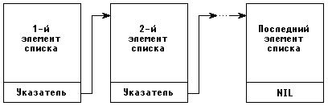

|
|
|
|
Оъбявление указателей
Как правило, в Турбо Паскале указатель связывается с некоторым типом данных. Такие указатели будем называть типизированными. Для объявления типизированного указателя используется значок ^, который помещается перед соответствующим типом, например:
var
P1 :^Integer;
р2 :^Real;
type
PerconPointer = PerconRecord;
PerconRecord = record
Name : String;
Job : String;
Next : PerconPointer
end;
Обратите внимание: при объявлении типа PerconPointer мы сослались на тип PerconRecord, который предварительно в программе объявлен не был. Как уже отмечалось, в Турбо Паскале последовательно проводится в жизнь принцип, в соответствии с которым перед использованием какого-либо идентификатора он должен быть описан. Исключение сделано только для указателей, которые могут ссылаться на еще не объявленный тип данных. Это исключение сделано не случайно. Динамическая память дает возможность реализовать широко используемую в некоторых программах организацию данных в виде списков. Каждый элемент списка имеет в своем составе указатель на соседний элемент (рис. 6.2), что обеспечивает возможность просмотра и коррекции списка. Если бы в Турбо Паскале не было этого исключения, реализация списков была бы значительно затруднена.

Рис.6.2. Списочная структура данных
В Турбо Паскале можно объявлять указатель и не связывать его при этом с каким-либо конкретным типом данных. Для этого служит стандартный тип POINTER, например:
var
р: pointer;
Указатели такого рода будем называть нетипизированными. Поскольку нетипизированные указатели не связаны с конкретным типом, с их помощью удобно динамически размещать данные, структура и тип которых меняются в ходе работы программы.
Как уже говорилось, значениями указателей являются адреса переменных в памяти, поэтому следовало бы ожидать, что значение одного указателя можно передавать другому. На самом деле это не совсем так. В Турбо Паскале можно передавать значения только между указателями, связанными с одним и тем же типом данных. Если, например,
var
p1,p2: integer;
р3 : Rеа1;
рр : pointer;
то присваивание
p1 := р2;
вполне допустимо, в то время как
р1 := р3;
запрещено, поскольку Р1 и Р3 указывают на разные типы данных. Это ограничение, однако, не распространяется на нетипизированные указатели, поэтому мы могли бы записать
pp := p3;
p1 := pp;
и тем самым достичь нужного результата.
Читатель вправе задать вопрос, стоило ли вводить ограничения и тут же давать средства для их обхода. Все дело в том, что любое ограничение, с одной стороны, вводится для повышения надежности программ, а с другой - уменьшает мощность языка, делает его менее пригодным для каких-то применений. В Турбо Паскале немногочисленные исключения в отношении типов данных придают языку необходимую гибкость, но их использование требует от программиста дополнительных усилий и таким образом свидетельствует о вполне осознанном действии.
|
|
|
|